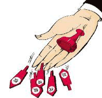

为了让大家更深入的了解今天我们要讲的话题，邀请大家来看个历史故事，随后我们展开讨论。
在清朝，判断一个官员职位高低的标准有两个部分。一个是品级（包括年薪）,另一个是服饰（包括顶戴）
在服饰上,一般高官的官服上秀的图案都比较霸气,譬如仙鹤、孔雀之类，如果是八、九品官员那么只能秀秀鹌鹑（蛋？）、练雀之类（不秀麻雀或羊肉串已经很不错了）。
不过我们再来看一品到九品官的年薪，貌似差别就不这么大。
根据史书记载：清朝官员的薪俸非常微薄，一品官(相当于现代的正部级以上官员)的俸银每年不过一百八十两，每月只到十几两银子，小一点七品官知县之类，每年俸银只有四、五十两。
这好比一个大神和一个菜鸟同在北上广就职，一个年薪一万八，一个年薪四千五。完全是同归于尽的节奏。
那么清朝官员为什么还能如此滋润的活下去呢？下面我来简单介绍一下。
一、耗羡
这主要在雍正上位前的一个“赚钱”方式。具体操作方式无比简单：各个地方官员在每年收税时加了一个名目，美其名曰“弥补地方损耗”。譬如你每年需要上交500两的税，那么其实你最终要交505块。这5块钱就是“耗”。大家注意：这些钱并入充公，而是进入了各个地方官的私囊，而且这在当时也是一个从上至下都默认的方式。
这时假设让你去当县官，你会想到几种“敛财方式？”，换我至少会想到三点：
1、做假账，显示“地方损耗很大”，于是时不时的增加“耗”率
2、巧设名目，在多品种税收上增加“耗种”
3、设置空税，通过各种方式漏报税务。于是连本金带“耗”一起吞下
好吧，我感觉我似乎有点邪恶。只不过清朝很多官员在实操过程中一定比我更有手腕、更无耻。
二、养廉银
大约是在雍正年间，皇帝火了，你们这么“耗”下去，老子吃什么。于是一怒之下，明令规定各地的“耗羡”必须充公，他另外发“养廉银”给官员，根据官员的品级发放不同程度的养廉银。
这时大家看一下：
像比较高层的总督如两江总督、直隶总督每年可以拿到1.5万—1.8万两奖金。
相对比较挫的是低级县令也能拿到400—1800两银子。
这里有个薪酬范围是因为根据各地的物价、政府事务繁琐程度来定的价。（看来两极分化、地区差异自古就有）
三、冰敬和碳敬
这里主要指的是清朝京官和外官之间的勾结。由于京官掌握的是高级力，譬如外官的任免，而只有外官才能接触到民搜刮民脂民膏。于是外官要想巴结京官办事或者升迁甚至买官就会需要像京官行贿，美其名曰：冰敬、炭敬。听起来好像类似：夏天发点冷饮费啊、冬天送木炭之类的。听起来随意，其实那都是白花花的银子交易。
当然，清朝很多官员搜刮钱财的方式还有很多，这些都被统称“陋规”，讲明白点叫做“灰色收入”。
说白了，这种收入不是白色，也不是黑色，而是介于黑白之间，才叫“灰色“。
在古代，这种灰色收入最大特征就是：皇帝是知道的，而且也是默认的。大不了最后有些人贪污的实在不像话了，皇帝这才站起身瞅一瞅：“哦，确实太不要脸了“。
于是，扣一顶罪名、问斩、抄家。其中抄家是皇帝最为“内心喜悦”的事，因为他们代替皇帝完成了搜刮民脂民膏，皇帝直接收回，搞笑、简单、不留痕。
(二) 现代化企业的“陋规”
其实，今天我们本文的话题就是关于现代企业中的“陋规“或者”灰色收入“,从而延伸到一个主题：企业怎么留住领导。
注意哦，既然前面举了清朝的官员“陋规“，那说明，我们这里讲的灰色收入也都是“老板知道的、默认的”。
由于我此前接触的以IT企业居多，所以今天我们就以IT企业的一些“陋规”展开话题。
前段时间我接触了一个IT公司老板。当我们还在大谈特谈企业如何留住员工时，这位大夏天总是喜欢西装革履的老板冷不丁了问了句：你们知道企业怎么留住领导吗？

我们这帮头发短见识也短的货顿时愣住了。
其实在我印象里，一般企业里（主要指软件公司）会设置如下领导岗位：
1、副总。一般都是掌握公司重要命脉的，如技术或者客户资源或者渠道。一般来说，副总级都会有股份、期权（后者现在基本无法直视了）
2、总监。相当于副总级别，不过在收入和职权范围上会低副总一级。一般也有股权
3、中层干部。譬如部门经理之类，在稍具规模的软件公司部门经理往往也有股份，掌握着重要或不重要的业务条线项目管理
4、基层干部。这些好比古代的县令了，如项目经理等。据我所知，现在很多公司为了激励这些县令“只洗碗不吃饭“，也会给少量的股份或期权
不过，我们一直以为企业留住员工靠的是薪酬、激励机制、升迁，留住领导只需靠股权或者分红。事实上，在一些不为人知的层面上我们都错了。
据这位不怕热的西装老板告诉我们，在他们这个层面的公司（100人左右）圈子里，大家内心都有个“不约而同”的手段：
1、到一定层次的领导会有股份（期权我们就忽略不计先），然后真正到最后给大家分红时，绝对大股东的老板肯定会“勾结“财务总监进行账目的特殊处理（这在BAT等大公司也许表面上不存在，但是至少大部分层面的公司都有类似“手段”）,真正能分到你手的红利远没有你想象或者你在家裹着被子算了一整晚的多。
2、很多领导（尤其是部门经理）很可能工资还没有部门内引进的技术大牛多。
3、除此之外，这些领导们平时还要承担客户三陪、项目风险责任、办公室政治的“虐待”。
综上所述，其实在公司里，领导（主要是指中层领导）的收入往往和骨干成员的收入也差不了多少。尤其是一些小公司的领导，除了承担以上风险，还需要和一线员工一样干活。那么既然这样，谁还愿意去做什么领导呢？
于是，这位不怕热的西装老板给我们解开了谜题。在我看来，他采用了一种现代化的陋规手段。
首先，到了一定层次的领导拥有“费用审批权”，也就是说在一定范围内加班产生的费用、餐费、打车费，这个领导可以拥有“二级”审核权。说简单了就是：大家把费用填了单子给领导，领导签了字后分管副总或者老板直接签字，整个流程就结束了。
大家不要小看这个“简易流程”，这里有学问。这位西装老板提拔一些中层领导后，会默认他们在月度里进行一些“额外费用的报销”。翻译成人话就是：你给自己多报一定额度的费用，老板是会睁眼闭眼通过的。只要不是太过分。

其次是权力下放，这位西装老板会把一些权力下放给部门经理，譬如员工的考核、升迁、岗位评级。于是，这些领导就好比古代的京官，总会在逢年过节收到底下“懂事的”员工的“冰敬或碳敬”。（不懂事的员工咋办？滚粗？你懂的）
再次就是项目提成或者团队奖金。对于一些有杰出贡献或者技术能力卓越的管理者，公司总会想一些办法留住他。因为这种高手的离职除了给公司本身带来损失外，还会给竞争对手带来“好处”，正所谓双面负效应，这是老板都不想看到的。
这一点，如果是单纯的加薪或升迁或者哪怕是给股份，都不足以留住高手管理者，因为人的欲望是无止境的，没有一个人能真正永远实现马云所说“干的爽、拿的多”。
于是，最好的办法就是除了与其“陋规”的享受，还必须给予其“权力”的享受。人和动物一样，除了平常能吃饱，如果能成为群体的首领那是能带来无比刺激的感官效应的。在这点来看，西装老板采用的是：项目提成制、团队奖金制，并且这些money的总数虽然老板定，但是分配给谁、分配多少完全由这位领导决定。并且在一些项目提成上，老板还会保密提成总额。这样，领导的分配主动权就更大，因为谁也不知道这位领导一共有多少“可分配”的项目奖金。而老板从背后绝对能知道这位领导到底分配给自己多少钱。还是那句话，只要不过分，老板很乐意“睁一眼闭一眼”。
最后是其他业务中产生的陋规，这一点涉及到一些商业秘密，就不多说了。譬如“店小二“、淘宝等关键字，大家自行去体会吧。虽然某大神老板到了一定程度出来打压和压制，但是内部的陋规根本禁止不了，而且关键某大神并不想完全禁止掉。
否则，作为老板，他既要头疼怎么留住员工，还要头疼怎么留住领导。
最后我想总结的是：
陋规存在于几千年，也许真的不可能完全消灭掉。
大家会发现很多新兴公司开了没几年就倒了，而且技术人才、管理人才根本留不住。很多公司抱怨：各种制度已经相对很完善了，考核、激励机制、升迁机制也没少做，到最后依然无法留住人。
也许，到今天大家还在用各种角度去讨论怎么实施一种新的、完美的考核和激励制度，在各大博客或者论坛中讨论的不亦乐乎。这里面不乏各种管理大师、经验大牛在想办法、提建议。
不过要我说啊，制度归制度，要想扎根其实不能完全靠死板的制度。
真正牛逼的公司表面上实行全套先进公司体制，但事实上你从另一种角度来看，也许高手老板是能有效、有手腕控制公司“陋规“的。
那么现代企业的“陋规“到底是好还是不好呢？
也许我们没必要下这个结论，因为这是一个人性层面的话题，我们也许能定死制度，但是我们无法超越我们的人性。如果硬要我们下个结论，只能说“我们并不排斥公司的管理需要8分制度+2分陋规“。
--------------------------------------------------
【你如果不爱读书、不爱看新闻、不爱学习，没关系。我来做你的"陪读君"】
奴隶我的方式：请关注微信订阅号：程序员在囧途。
每天讲故事、讲商业模式、讲技术给你听。